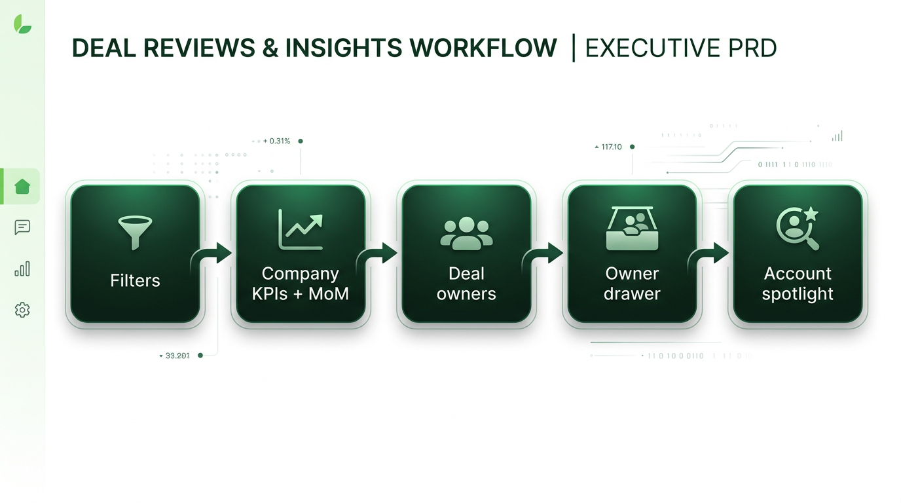
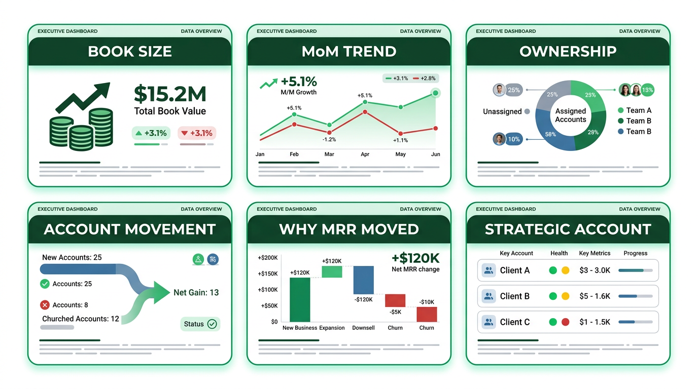
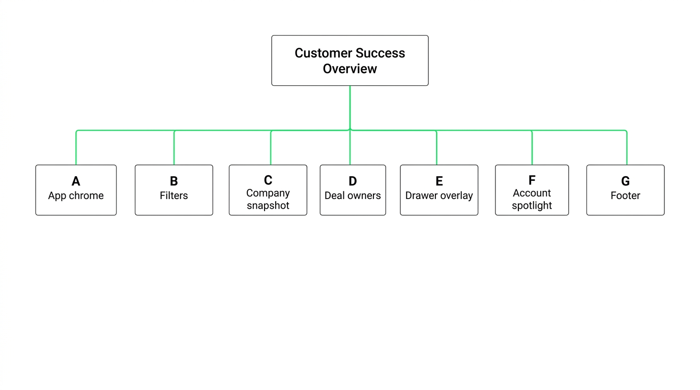
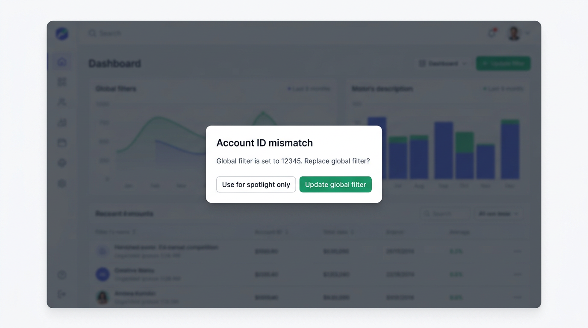
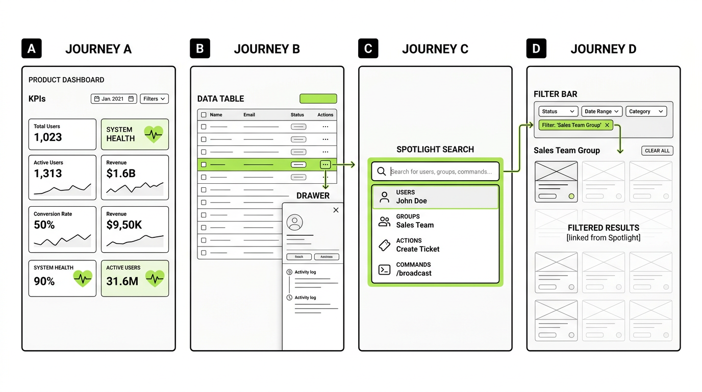
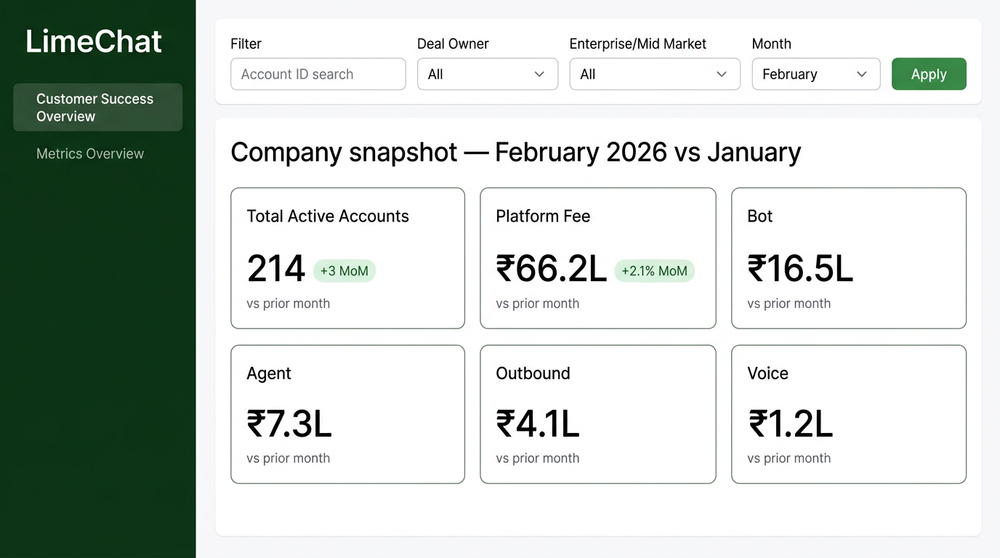
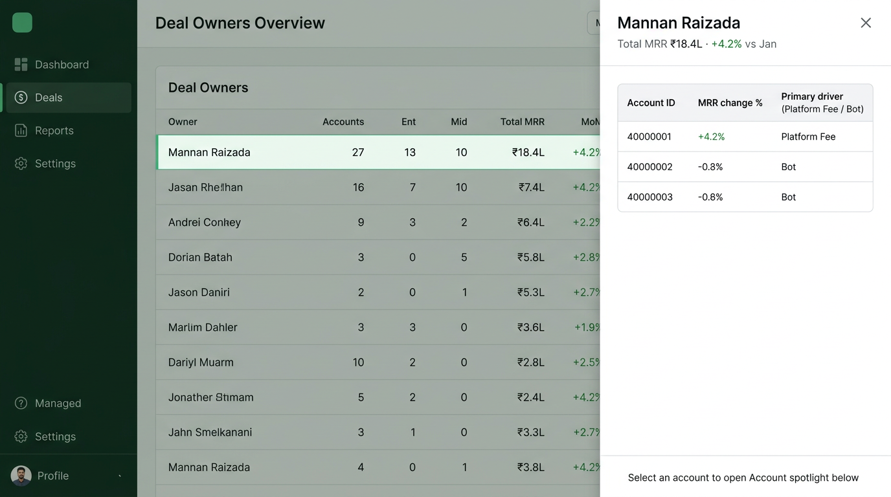
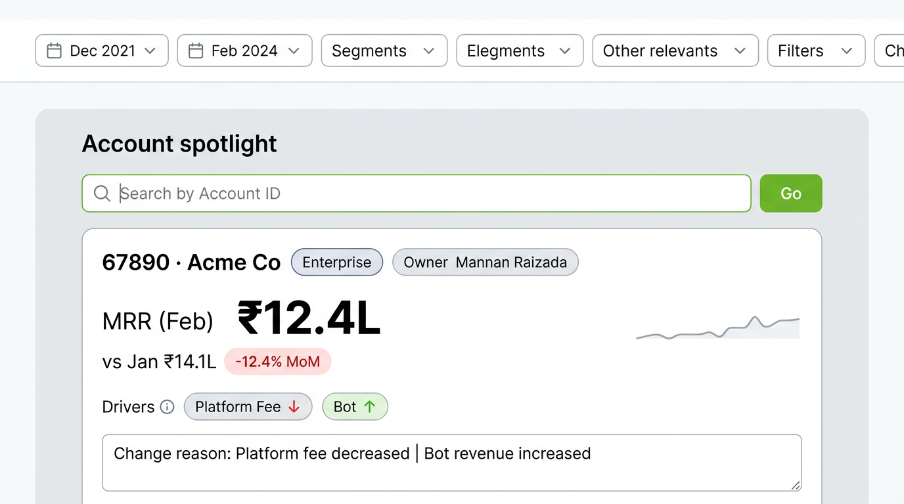
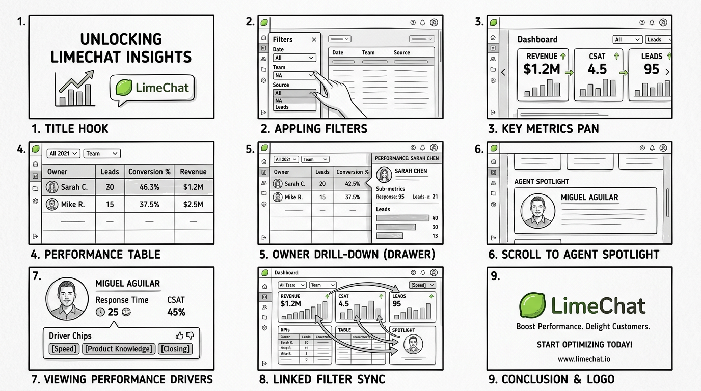

Version: 1.1
Owner: Product & Design
Audience: Engineering, Design, Analytics (Metabase), Video / Comms (explainer)
Status: Approved for build & video production (pending Metabase card IDs where noted)
| Version | Date | Summary |
|---|---|---|
| 0.1 | — | Initial mocks + backlog seeds |
| 1.0 | — | First-principles IA, resolved decisions, single-video spec, no loose ends |
| 1.1 | — | Embedded diagram mocks per section; PDF export + render script |
This PRD defines a Customer Success Executive experience in the existing Next.js dashboard: global filters → company snapshot (KPIs + MoM) → deal owner performance → owner drawer (account-level drivers) → Account Spotlight (single-account narrative). All quantitative metrics are fetched from Metabase; the application owns state, layout, accessibility, and motion.
A single explainer video (spec in Section 12) walks a first-time executive through the full flow in one continuous story.
Visual — end-to-end flow (reference mock)

| Fundamental question | Why it matters | Primary surface in UI |
|---|---|---|
| How big is the CS book right now? | Baseline for planning | Company KPI strip — Active Accounts + revenue streams |
| Are we growing or shrinking vs last month? | Executive pulse | MoM deltas on every KPI + optional summary band |
| Who owns outcomes? | Accountability | Deal Owner table (ranking, totals, MoM) |
| Which accounts moved under an owner? | Coaching / rescue | Owner drawer — per-account rows |
| Why did MRR move? | Actionability | Driver columns + change reason (Metabase) |
| What is happening on one strategic account? | Deep dive without re-filtering the whole world | Account Spotlight |
If a proposed UI element does not map to one of these questions, it is out of scope for v1 unless promoted via amendment.
Visual — first-principles map (six questions → surfaces)

Every subsection below is intentional; names are stable for engineering and video narration.
Customer Success Overview (route / tab)
│
├── A. App chrome (persistent)
│ ├── A1. Brand / sidebar navigation
│ └── A2. Tab: Customer Success Overview | Metrics Overview (existing)
│
├── B. Global filter bar (sticky below header)
│ ├── B1. Account ID — search / typeahead (optional: debounced)
│ ├── B2. Deal Owner — single-select from fixed list + “All”
│ ├── B3. Enterprise / Mid Market — single-select + “All”
│ ├── B4. Month — January | February | … (extensible)
│ └── B5. Apply — commits filter state to all dependent Metabase calls
│
├── C. Company snapshot (section)
│ ├── C1. Section title — e.g. “Company snapshot — {Month} {Year} (vs {Prior month})”
│ ├── C2. KPI strip (six tiles, single row on desktop; wrap on small screens)
│ │ ├── C2a. Total Active Accounts (+ MoM where defined)
│ │ ├── C2b. Contract revenue — Platform fee (+ MoM)
│ │ ├── C2c. Contract revenue — Bot (+ MoM)
│ │ ├── C2d. Contract revenue — Agent (+ MoM)
│ │ ├── C2e. Contract revenue — Outbound (+ MoM)
│ │ └── C2f. Contract revenue — Voice (+ MoM) [feature-flagged until Metabase card exists]
│ └── C3. Optional: “Net movement” one-liner (if Metabase exposes aggregate bridge)
│
├── D. Deal owner performance (section)
│ ├── D1. Section title + short helper text (“Click a row to see accounts”)
│ ├── D2. Data table — sortable columns (min: Owner, Accounts, Enterprise count, Mid-Market count, Total MRR or CS revenue, MoM %)
│ └── D3. Row interaction — click opens **Owner detail drawer** (D4)
│
├── E. Owner detail drawer (overlay; not a separate route in v1)
│ ├── E1. Header — Owner name; total MRR (or defined headline metric); MoM vs prior month
│ ├── E2. Sub-table — one row per account: Account ID, Account name (if available), MRR change, % , primary driver, truncated reason
│ ├── E3. Row action — “View in Account Spotlight” (sets Spotlight + scrolls)
│ └── E4. Close — returns focus to table; selection state may persist for video/deep link
│
├── F. Account Spotlight (section; same page, below D)
│ ├── F1. Section title + helper (“Deep dive on one account”)
│ ├── F2. Search — Account ID input + submit (and optional recent accounts)
│ ├── F3. Detail card — headline MRR, prior month, MoM %, trend label
│ ├── F4. Driver breakdown — platform / bot / agent / outbound / voice (as data allows)
│ ├── F5. Change reason — full text from Metabase
│ └── F6. Empty / error / loading states (explicit copy in Section 8)
│
└── G. Footer / meta (optional v1)
└── G1. Data freshness string if Metabase returns `updated_at` or build time
Visual — IA tree (sections A–G)

These remove “loose ends” for engineering and script writing.
| Topic | Decision | Rationale |
|---|---|---|
| MoM definition | Calendar month vs immediate prior month in the same year: e.g. February vs January. January compares to December of the prior year. | Aligns with finance month close; implement in Metabase SQL. |
| Global Account ID vs Account Spotlight | Linked default: When B1 Account ID is non-empty after Apply, Account Spotlight (F) automatically loads that account’s detail (same Metabase query as manual search). When B1 is empty, Spotlight is independent (user can explore any account without narrowing global KPIs). If user clears B1, Spotlight retains last loaded account until user clears Spotlight explicitly. | One mental model: filter = “whole dashboard lens”; Spotlight when no filter = “sidecar deep dive.” |
| Conflict: user types different ID in Spotlight while B1 is set | On Spotlight Submit, show inline warning: “Global filter is set to {id}. Replace global filter?” Actions: [Use for spotlight only] (temporary override for F only) or [Update global filter] (sets B1 and re-Apply). | Prevents silent inconsistency. |
| Voice revenue tile | Behind NEXT_PUBLIC_VOICE_REVENUE_ENABLED (or server env). Off: tile hidden. On: requires METRICS_CONFIG card ID. |
Ship UI before analytics finalizes card. |
| Outbound in summary | If summary card omits outbound, continue using dedicated Metabase card for outbound tile (existing pattern). | Data accuracy over single-query convenience. |
| URL / sharing | Support ?month=&deal_owner=&account_id= for filter bar; ?spotlight= optional for Account Spotlight account id. Document in README. |
Shareable executive links. |
| Accessibility | MoM must include text: “Up 4.2%” not only green color. | WCAG-aligned. |
Visual — Spotlight vs global filter conflict (Section 4, conflict row)
When the user submits a different Account ID in Account Spotlight while B1 is set, this modal pattern applies.

| Persona | Job | Success in this dashboard |
|---|---|---|
| CS leadership | See book health and trend | C + MoM at a glance |
| RevOps / Finance | Reconcile segments and month | B filters + C consistency |
| Deal owner (manager) | See team and accounts | D + E |
| Account manager | Explain one customer | F |
Visual — persona → section mapping
Personas align to IA sections C–F as in the table above (leadership → C; RevOps → B+C; deal owner → D+E; account manager → F).
Visual — four acceptance journeys (A–D)

| ID | Requirement | Acceptance |
|---|---|---|
| FR-01 | Filter state includes account_id, deal_owner, enterprise_midmarket, month |
All documented Metabase tags receive values per metrics-config |
| FR-02 | Apply commits state; dependent queries refetch | No stale mix of old/new filters |
| FR-03 | Company KPI strip shows six streams + Active Accounts | Layout per Section 3C |
| FR-04 | Each KPI shows value + MoM fields when Metabase returns them | Fallback: hide MoM chip if null |
| FR-05 | Deal owner table sortable | At least one numeric column sort |
| FR-06 | Row click opens drawer E with correct owner | Correct Metabase deal_owner param |
| FR-07 | Drawer lists accounts with driver + reason columns | Column map in analytics contract |
| FR-08 | “View in Spotlight” from drawer | Sets Spotlight account, scrolls to F |
| FR-09 | Account Spotlight search loads Metabase detail | Loading/error/empty states |
| FR-10 | Linked behavior Section 4 | Automated tests or QA checklist |
| FR-11 | Conflict flow Section 4 | Warning + two actions |
| FR-12 | URL params sync optional | Documented query keys |
| FR-13 | Voice tile gated by env | No runtime error if disabled |
Visual — See Section 11 for UI mocks (C–F) and PRD diagrams; functional scope maps to tiles and tables shown there.
| State | Surface | User-facing copy (draft) |
|---|---|---|
| Loading | C, D, E, F | “Loading…” / skeletons |
| No permission / API error | Global | “Unable to load metrics. Try again.” |
| No data (valid filters) | Table | “No accounts match these filters.” |
| Spotlight empty | F | “Enter an Account ID to see MRR, trend, and change drivers.” |
| Spotlight not found | F | “No data for this account in the selected month.” |
| MoM N/A | KPI | Omit chip or “—” with tooltip “Prior month unavailable” |
Visual — Loading and empty states apply to the same surfaces as Section 11.1 (KPI strip, owner table, drawer, Spotlight).
lib/metrics-config.ts. | Surface | Typical grain | Tags |
|---|---|---|
| C | Company aggregate | month, optional segment filters |
| D | Deal owner | month, deal_owner?, enterprise?, account? |
| E | Account under owner | deal_owner, month, … |
| F | Single account | account_id, month |
docs/metabase-contract.md (recommended follow-up artifact).| File | IA | Purpose |
|---|---|---|
cs-mock-01-company-overview.png |
B + C | Global filter bar + company KPI strip |
cs-mock-02-deal-owner-drawer.png |
D + E | Deal owner table + owner detail drawer |
cs-mock-03-account-spotlight.png |
F | Account Spotlight deep dive |



| File | Section | Purpose |
|---|---|---|
prd-mock-01-exec-flow.png |
1 | Executive flow diagram |
prd-mock-02-first-principles.png |
2 | Six questions infographic |
prd-mock-03-ia-tree.png |
3 | IA tree A–G |
prd-mock-04-conflict-modal.png |
4 | Conflict UX |
prd-mock-05-user-journeys.png |
6 | Journeys A–D storyboard |
prd-mock-06-video-storyboard.png |
12 | Nine-scene video grid |
Deliverable: One MP4 (or hosted link) between 90 and 120 seconds, 16:9, 1080p minimum, voiceover + on-screen labels. This repository does not ship a rendered video file; Design / Comms produces it using this shot list.
Tone: Calm, executive, no jargon beyond “month over month” and “deal owner.”
Music: Optional, low under voice; not required.
Visual — nine-scene storyboard (maps to table 12.1)

| Scene | Duration (s) | Visual | Voiceover (guide script) | On-screen text |
|---|---|---|---|---|
| 1. Hook | 0–8 | LimeChat product frame; dashboard tab highlighted | “This is the Customer Success Executive view—one place to see revenue health, ownership, and account-level change.” | Title: Customer Success Overview |
| 2. Filters | 8–22 | Cursor highlights B1–B5; user changes Month; clicks Apply | “Start with filters: account, deal owner, segment, and month. Apply runs the whole story.” | Labels: Filters |
| 3. Company snapshot | 22–42 | Pan across C2a–C2f; MoM chips animate in | “Here is the company snapshot—active accounts and every major revenue line, each with month-over-month movement.” | Company snapshot |
| 4. Deal owners | 42–58 | Scroll to D; highlight column headers; sort | “See which deal owners carry the book and how their portfolio moved.” | Deal owner performance |
| 5. Drawer | 58–78 | Click row; E slides in; highlight E1 then E2 | “Click an owner to open the detail drawer—total MRR for that owner, then every account underneath with the driver of change.” | Owner detail |
| 6. To Spotlight | 78–92 | Click “View in Account Spotlight” or account row; scroll to F | “From here, jump straight to Account Spotlight—a dedicated readout for one account.” | Account Spotlight |
| 7. Spotlight detail | 92–108 | F3–F5 visible; driver chips | “MRR, prior month, the percent change, what drove it—platform, bot, agent, outbound, voice—and the written reason.” | Drivers · Reason |
| 8. Linked filter | 108–118 | Set B1 Account ID, Apply; F auto-loads | “When you filter by account globally, Spotlight stays in sync—same account, full context.” | Filters ↔ Spotlight |
| 9. Close | 118–120 | Fade to logo | “Customer Success Overview—track the book, the owners, and every account story.” | LimeChat |
Total: ~120s (trim scenes 3 or 7 by 5s each if a strict 90s cut is required).
| Risk | Mitigation |
|---|---|
| Metabase latency | Skeletons, parallel fetch, cache policy per API route |
| Incomplete MoM in SQL | FR-04 fallback; analytics backlog |
| Filter complexity | Section 4 conflict UX; user testing on F |
| Term | Definition |
|---|---|
| MoM | Month-over-month vs prior calendar month per Section 4 |
| Deal owner | Hubspot / internal owner field; list is curated in UI |
| Driver | Primary attributed revenue component for MRR change |
| Account Spotlight | Section F; single-account narrative |
PRD-customer-success-executive-dashboard.pdf (generated from this Markdown; images load from cs-dashboard-mocks/.)python3 docs/render-prd-pdf.py (requires Google Chrome for headless print; also writes PRD-customer-success-executive-dashboard.html).End of PRD v1.1